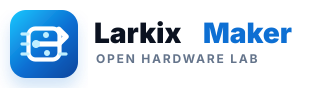

5 个蓝色现代方向：从电路开拓、开源节点、先锋增长、蓝图构建到分支协作。每个方案都是独立 SVG，可直接用于网页、导航栏和后续图标适配。
电路路径加前进箭头，偏“技术开创”和“持续推进”，适合主站导航。
gokottamaker-logo-option-1.svg
节点环绕形成开放协作感，更强调开源社区、连接和共享。
gokottamaker-logo-option-2.svg
GM 字母和上升信号线结合，更利落、更产品化，适合品牌升级。
gokottamaker-logo-option-3.svg
开放括号和信号线，突出从原理图到代码的工程创造过程。
gokottamaker-logo-option-4.svg
六边形核心加分支节点，最贴近开源硬件、版本迭代和协作发布。
gokottamaker-logo-option-5.svg
保留 01 的前进路径，加入轻微环绕轨迹，科技感更强但仍很干净。
gokottamaker-logo-option-6.svg
主箭头加上下分支节点，更强调开源分支、协作和项目演进。
gokottamaker-logo-option-7.svg

把电路路径放进芯片轮廓里，最贴近嵌入式和硬件开发主题。
gokottamaker-logo-option-8.svg
折线路径像从设计入口进入新方向，适合表达开创和工程探索。
gokottamaker-logo-option-9.svg
闪电式路径更有速度和创新感，适合偏年轻、强识别度的视觉方向。
gokottamaker-logo-option-10.svg
纯蓝六边形核心，白色电路箭头和青色节点，最接近 05 的简洁落地版。
gokottamaker-logo-option-11.svg
深蓝与主蓝分区，加入绿色发布节点，更强调开源项目的版本发布。
gokottamaker-logo-option-12.svg
浅底描边六边形，更轻、更适合浅色导航栏和小尺寸使用。
gokottamaker-logo-option-13.svg
双层纯色六边形，整体更稳重，适合做正式品牌主标。
gokottamaker-logo-option-14.svg
多块纯色拼接六边形，强调模块化、开源硬件和工程组合感。
gokottamaker-logo-option-15.svg
双层蓝色六边形，结构更均衡，保留 05 的开源分支和前进箭头。
gokottamaker-logo-option-16.svg
分区色块加绿色节点，表达从开源分支到版本发布的流程。
gokottamaker-logo-option-17.svg
浅色内芯让标志更轻，适合白色导航栏和小尺寸图标。
gokottamaker-logo-option-18.svg
加入四个硬件引脚细节，更明确地连接到嵌入式和 PCB 主题。
gokottamaker-logo-option-19.svg
把内部路径做成 G 形开源回路，品牌识别更强，仍保持六边形核心。
gokottamaker-logo-option-20.svg
沿用 15 的三面拼接六边形，节点和路径比例更均衡，适合做主标。
gokottamaker-logo-option-21.svg
保留模块拼接，加入绿色发布节点，开源项目属性更明确。
gokottamaker-logo-option-22.svg
在 15 的色块结构里加入 G 形回路，品牌首字母识别更强。
gokottamaker-logo-option-23.svg
在拼接六边形外加硬件引脚，嵌入式和 PCB 联想更直接。
gokottamaker-logo-option-24.svg
路径更简化、节点更明确，小尺寸识别度会比复杂版本更稳定。
gokottamaker-logo-option-25.svg